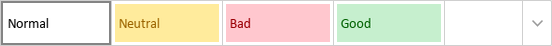

Podešavanje tipa fonta, veličine, stila i boja
U Uređivaču tabela možete izabrati tip fonta i njegovu veličinu, primeniti jedan od stilova dekoracije i promeniti boju fonta i pozadine klikom na odgovarajuće ikone na kartici Početna na gornjoj traci sa alatkama.
Napomena: ako želite da primenite formatiranje na podatke u tabeli, izaberite ih mišem ili koristite tastaturu i primenite željeno formatiranje. Ako je potrebno da primenite formatiranje na više nepovezanih ćelija ili opsega ćelija, držite pritisnut taster Ctrl dok birate ćelije/opsege mišem.
| Font | Koristi se za izbor jednog od fontova sa liste dostupnih fontova. Ako traženi font nije dostupan na listi, možete ga preuzeti i instalirati na operativni sistem i font će biti dostupan za korišćenje u desktop verziji. | |
| Veličina fonta | Koristi se za izbor unapred definisanih vrednosti veličine fonta iz padajuće liste (podrazumevane vrednosti su: 8, 9, 10, 11, 12, 14, 16, 18, 20, 22, 24, 26, 28, 36, 48, 72 i 96). Takođe je moguće ručno uneti prilagođenu vrednost do 409 pt u polje za veličinu fonta. Pritisnite Enter da biste potvrdili. | |
| Povećaj veličinu fonta | Koristi se za promenu veličine fonta tako što se ona povećava za jedan poen svaki put kada se klikne na ikonu. | |
| Smanji veličinu fonta | Koristi se za promenu veličine fonta tako što se ona smanjuje za jedan poen svaki put kada se klikne na ikonu. | |
| Promeni veličinu slova | Koristi se za promenu veličine slova. Veličina rečenice. – format odgovara standardnoj rečenici. mala slova – sva slova su mala. VELIKA SLOVA – sva slova su velika. Veliko Prvo Slovo Svake Reči – svaka reč počinje velikim slovom. pROMENI vELIČINU – obrće veličinu slova izabranog teksta ili reči na kojoj se nalazi pokazivač miša. | |
| Podebljano | Koristi se za podebljavanje fonta, čineći ga debljim. | |
| Kurziv | Koristi se za blago naginjanje fonta udesno. | |
| Podvučeno | Koristi se za podvlačenje teksta linijom ispod slova. | |
| Precrtano | Koristi se za precrtavanje teksta linijom kroz slova. | |
| Indeks/Eksponent | Omogućava izbor opcije Eksponent ili Indeks. Opcija Eksponent koristi se da bi se tekst smanjio i postavio u gornji deo linije teksta, na primer kao kod razlomaka. Opcija Indeks koristi se da bi se tekst smanjio i postavio u donji deo linije teksta, na primer kao kod hemijskih formula. | |
| Boja fonta | Koristi se za promenu boje slova/karaktera u ćelijama. | |
| Boja popune | Koristi se za promenu boje pozadine ćelije. Pomoću ove ikone možete primeniti jednobojnu popunu. Boja popune ćelije takođe se može promeniti u odeljku Popuna na kartici Podešavanja ćelije na desnoj bočnoj traci. | |
| Promeni šemu boja | Ovo dugme se nalazi na kartici Raspored. Koristi se za promenu podrazumevane palete boja za elemente radnog lista (font, pozadina, grafikoni i elementi grafikona) izborom jedne od dostupnih opcija: Aspect, Blue Green, Blue II, Blue Warm, Blue, Grayscale, Green Yellow, Green, Marquee, Median, Office 2007-2010, Office 2013-2022, Office, Orange Red, Orange, Paper, Red Orange, Red Violet, Red, Slipstream, Violet II, Violet, Yellow Orange, Yellow i New Office. |
Napomena: takođe je moguće primeniti jedan od unapred definisanih stilova formatiranja izborom ćelije koju želite da formatirate i izborom željenog stila sa liste na kartici Početna na gornjoj traci sa alatkama:

Da biste promenili boju fonta ili koristili jednobojnu popunu kao pozadinu ćelije,
- izaberite karaktere/ćelije mišem ili celu radnu tabelu pomoću kombinacije tastera Ctrl+A,
- kliknite na odgovarajuću ikonu na gornjoj traci sa alatkama,
- izaberite bilo koju boju iz dostupnih paleta

- Boje teme – boje koje odgovaraju izabranoj šemi boja tabele.
- Standardne boje – podrazumevane postavljene boje.
-
Takođe možete primeniti prilagođenu boju koristeći dve različite opcije:
- Pipeta – koristite ovu opciju da biste izabrali željenu boju klikom na nju u tabeli.
-
Više boja – kliknite na ovaj natpis ako potrebna boja nedostaje među dostupnim paletama. Izaberite potreban opseg boja pomeranjem vertikalnog klizača boja i postavite određenu boju prevlačenjem birača boja unutar velikog kvadratnog polja boja. Kada izaberete boju pomoću birača boja, odgovarajuće RGB i sRGB vrednosti boje biće prikazane u poljima sa desne strane. Takođe možete definisati boju na osnovu RGB modela boja unosom odgovarajućih numeričkih vrednosti u polja R, G, B (crvena, zelena, plava) ili unosom sRGB heksadecimalnog koda u polje označeno znakom #. Izabrana boja se prikazuje u polju za pregled Novo. Ako je objekat prethodno bio popunjen nekom prilagođenom bojom, ta boja se prikazuje u polju Trenutno kako biste mogli da uporedite originalne i izmenjene boje. Kada je boja definisana, kliknite na dugme Dodaj:

Prilagođena boja će biti primenjena na tekst/ćeliju i dodata u paletu Nedavne boje.
Da biste uklonili boju pozadine iz određene ćelije,
- izaberite ćeliju ili opseg ćelija mišem ili celu radnu tabelu pomoću kombinacije tastera Ctrl+A,
- kliknite na ikonu Boja popune na kartici Početna na gornjoj traci sa alatkama,
- izaberite ikonu .